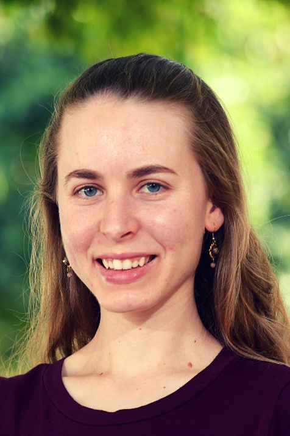

Michal N. Goldstein
PhD Candidate
New York University
Music Technology | Music Theory | Cognitive Psychology | Machine Learning
Email: mng320 [at] nyu [dot] edu


PhD Candidate
New York University
Email: mng320 [at] nyu [dot] edu
Welcome! I’m Michal Goldstein, a PhD candidate in Music Technology at NYU, where I bridge the worlds of music, cognitive science, and machine learning. At the Music and Audio Research Laboratory, I explore how humans perceive and respond to music, uncovering patterns in melodic structures and emotional expression through computational tools.
My academic journey, from a BA in Psychology and Musicology to an MA in Musicology and Cognitive Sciences at The Hebrew University of Jerusalem, led me to NYU, where I continue to investigate the intersections of music and technology.
In addition to research, I’m passionate about teaching and mentoring. As an adjunct professor and teaching assistant, I’ve guided students in music cognition, keyboard harmony, and research methodologies, fostering collaboration and critical thinking.
Thank you for stopping by—I invite you to explore my work and join me in the exciting dialogue between music, the brain, and technology.
Year: in preparation
Authors: Michal N. Goldstein, Morwaread M. Farbood, Pablo Ripollés
Authors: Michal N. Goldstein, Roni Granot, Pablo Ripollés, Morwaread M. Farbood
Year: 2024
Journal: Music Perception
Conference Name: International Conference on New Interfaces for Musical Expression
Year: 2021
Authors: Claire Pelofi, Michal N. Goldstein , Dana Bevilacqua, Michael McPhee, Ellie Abrams, Pablo Ripollés
Conference Proceedings
Conference Name: Conference for Musical Discussions by Early-Career Researchers
Year: 2023
Conference Talk
Conference Name: International Conference for Systematic Musicology (SysMus)
Year: 2022
Conference Talk
Conference Name: New Interfaces for Musical Expression (NIME)
Year: 2021
Poster Presentation
Conference Name: International Conference on Music Perception and Cognition (ESCOM/ICMPC)
Year: 2021
Poster Presentation
Conference Name: International Conference on Music Perception and Cognition (ESCOM/ICMPC)
Year: 2021
Poster Presentation
Event: The Jerusalem Brain Community Brain & Beer event
Year: 2018
Invited Speaker
Conference Name: International Conference on Music Perception and Cognition (ESCOM/ICMPC)
Year: 2018
Conference Talk (long paper)
Conference Name: The Jerusalem Brain Community Annual Retreat
Year: 2018
Poster Presentation
Conference Name: The Israeli Conference on Cognition Research
Year: 2018
Poster Presentation
Conference Name: Music, Language and Cognition summer school (Lake Como)
Year: 2017
Conference Talk
Conference Name: The Jerusalem Brain Community Annual Retreat
Year: 2017
Poster Presentation (Selected for “Poster Blitz” presentation)
Conference Name: The Israeli Conference on Cognition Research
Year: 2017
Poster Presentation